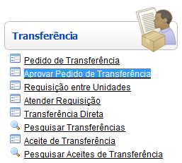
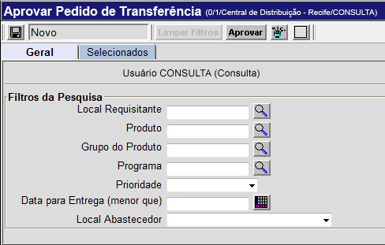
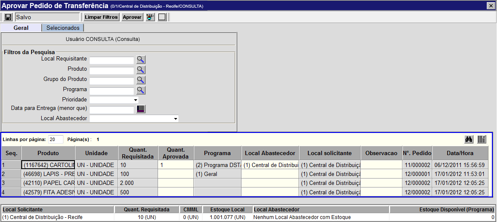
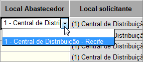
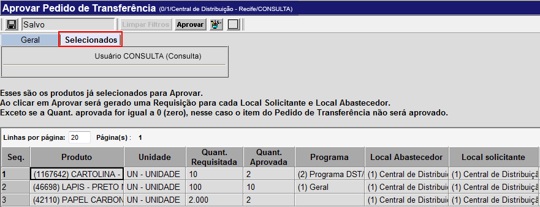

Aprovar Pedido de Transferência [ Voltar ]
Esta tela tem por função permitir a localização de
pedidos de
requisição pendentes de aprovação. Para auxiliar a localização de um
determinado pedido, a tela possui diversos filtros para refinamento da
pesquisa, de modo que esta pode se restringir a um local solicitante,
produto, prioridade, etc.
O formulário "Aprovar Pedido de Transferência" encontra-se dentro do menu "Transferência".

Ao clicar no formulário, o sistema exibirá a seguinte
tela:

Para visualizar e aprovar pedidos de requisição
pendentes, siga os passos abaixo:
1º
Passo:
para visualizar uma lista com pedidos e produtos de um determinado
perfil, configure
as opções de filtros. Um ou mais filtros poderão ser
utilizados concomitantemente. Os filtros disponíveis são:
- Local
Requisitante. Para visualizar pedidos referentes a um
determinado local
solicitante, especifique-o neste campo. Clique no
botão
 para selecioná-lo a partir de uma lista contendo os locais cadastrados.
para selecioná-lo a partir de uma lista contendo os locais cadastrados.
- Produto.
Para visualizar pedidos referentes a um determinado produto,
especifique-o neste campo. Clique no botão para selecioná-lo a partir de
uma lista contendo os produtos cadastrados.
- Grupo
do produto. Para visualizar pedidos referentes a um
determinado grupo de
produto, especifique-o neste campo. Clique no
botão
para selecioná-lo a partir de uma lista contendo os grupos cadastrados.
É possível inserir aqui um grupo-pai, para que os resultados incluam
todos os grupos-filhos.
- Programa. Se for o caso, selecione neste campo o programa da Secretaria de Saúde ao qual pertença o pedido de transferência (programas como, por exemplo, Saúde da Criança, Tabagismo, AIDS/DST, etc.).
- Prioridade.
Se desejar, selecione um grau
de prioridade específico para retornar um tipo
específico de pedido.
- Data
para entrega. É possível pesquisar pedidos referentes a
uma data de entrega
específica. Para tal, informe-a neste campo. Dicas para
preenchimento dos campos de data:
- Data
atual: digite o sinal . (ponto) e
pressione a tecla "Enter" para que o sistema retorne a data atual;
- Data
do mês corrente: digite o dia do mês e
pressione a tecla "Enter" para que o sistema retorne o mês e ano
correntes;
- Dias
a contar da data atual: digite o sinal + (mais) ou - (menos)
antes do número de dias em referência à data atual e pressione
a
tecla "Enter" para a data anterior ou posterior à data atual.
Exemplo: se a data
atual é 20/10/2010,
digite "+10"
e pressione a tecla "Enter" para que o sistema retorne o dia 30/10/2010
- Local
abastecedor. Se desejar visualizar pedidos referentes a um
local
abastecedor específico, informe-o neste campo. Clique no
botão
para selecioná-lo a partir de uma lista contendo os locais cadastrados.
Observação:
as configurações utilizadas para a pesquisa são salvas e serão
exibidas na próxima vez em que a tela for aberta. Se desejar limpar os
filtros previamente utilizados, clique em .
2º
Passo: clique no botão para salvar a configuração dos
filtros. Assim que a pesquisa é salva, serão exibidos os
pedidos e produtos em conformidade com as especificidades da pesquisa. para salvar a configuração dos
filtros. Assim que a pesquisa é salva, serão exibidos os
pedidos e produtos em conformidade com as especificidades da pesquisa.

3º Passo:
informe a quantidade aprovada e o local abastecedor para todos os
produtos que deseja aprovar. De acordo com o pedido e a
quantidade em estoque, informe a quantidade para aprovação no
campo "Quant. aprovada". Ao
clicar em uma linha de produto, os detalhes deste serão exibidos na
parte inferior da tela. No campo "Local
abastecedor", selecione com um clique o local
adequado.

4º Passo: clique no botão para salvar os dados referentes à
aprovação.
Se desejar visualizar apenas aqueles produtos selecionados para
aprovação, clique na aba "Selecionados".

5º Passo: caso todos os dados estejam corretos, clique no
botão .
Ir
para o topo da página
|